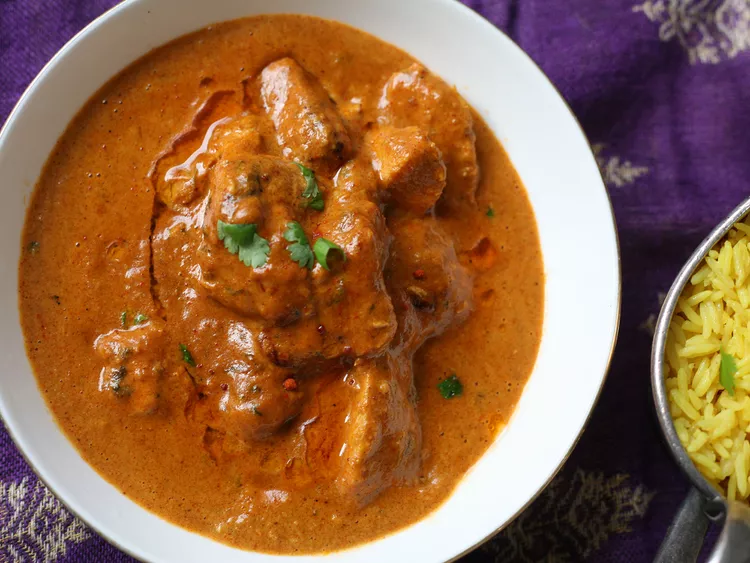

Indian Chicken Tikka Masala recepie

This Indian chicken tikka masala is an easy but flavorful version of everyone's favorite mild-medium curry! Serve with naan bread and mango chutney. Garnish with additional cilantro leaves.
Chicken tikka masala is composed of chicken tikka, boneless chunks of chicken marinated in spices and yogurt that are roasted in an oven, served in a creamy sauce. A tomato and coriander sauce is common, but no recipe for chicken tikka masala is standard; a survey found that of 48 different recipes, the only common ingredient was chicken.The sauce usually includes tomatoes (frequently as purée), cream, coconut cream and a masala spice mix. The sauce and chicken pieces may be coloured orange using foodstuffs such as turmeric, paprika, tomato purée or with food dye. Chicken tikka masala is similar to butter chicken, both in the method of creation and appearance.
So what do you need?
- 1 (14.5 ounce) can chopped tomatoes
- 4 tablespoons plain yogurt
- 2 cloves garlic, roughly chopped
- 1 (1 inch) piece ginger, coarsely chopped
- 2 tablespoons vegetable oil
- 1 onion, chopped
- 2 tablespoons vegetable oil
- 2 tablespoons masala curry paste
- 4 skinless, boneless chicken breasts, cut into 1-inch pieces
- salt and freshly ground black pepper to taste
- ¼ cup water
- 1 tablespoon all-purpose flour
- 3 tablespoons chopped fresh cilantro
How to cook a Tikka Masala
- Combine tomatoes, yogurt, garlic, and ginger in a blender and process until smooth.
- Heat oil in a large frying pan over medium heat. Add onion and fry until soft, 3 to 4 minutes, stirring constantly. Stir in curry paste and fry until fragrant, 1 minute more, stirring once or twice. Add the tomato mixture and chicken to the pan and mix together. Season with salt and pepper. Remove pan from heat.
- Mix water and flour together in a bowl. Stir into the chicken mixture in the frying pan. Return pan to the heat and bring to a boil, stirring constantly, about 5 minutes. Reduce heat to low, cover, and cook until thickened, about 15 minutes more. Sprinkle with cilantro and serve immediately.
Enjoy!
